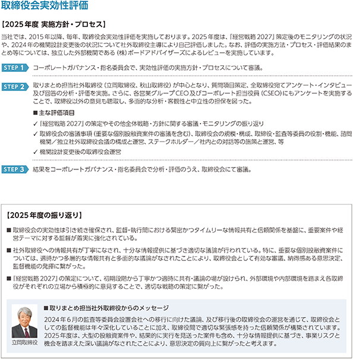
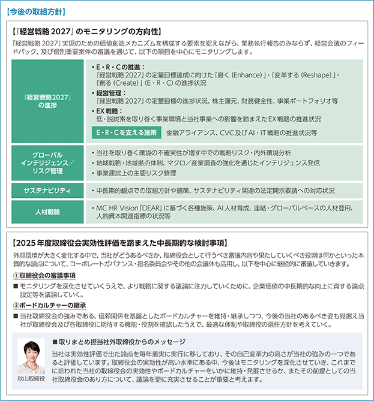
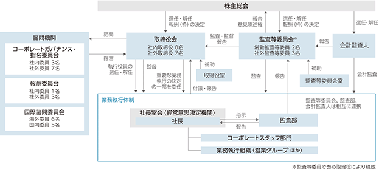
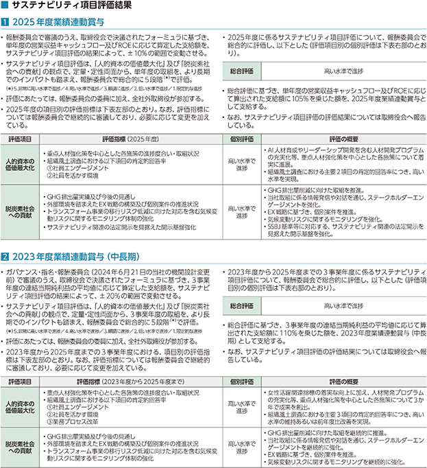
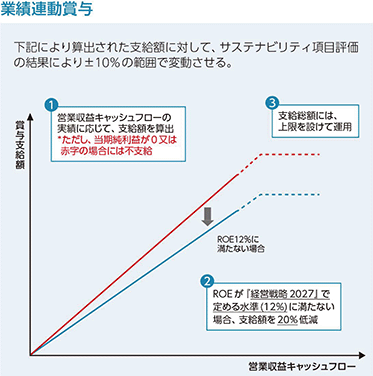
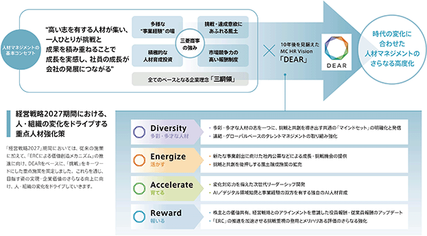
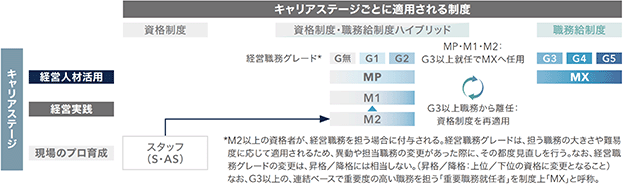
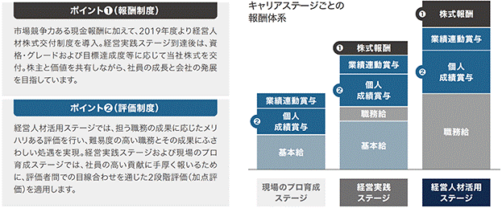

（注）2025年4月3日開催の取締役会における会社法第178条の規定に基づく自己株式の消却の決議により、2026年4月30日付で318,397,611株の自己株式の消却を実施しました。
会社法に基づき発行した新株予約権
※ 当事業年度の末日(2026年3月31日)における内容を記載しています。当事業年度の末日から提出日の前月末現在(2026年5月31日)にかけて変更された事項については、提出日の前月末現在における内容を[ ]内に記載しており、その他の事項については当事業年度の末日における内容から変更はありません。
(注) 付与株式数の調整及び新株予約権の行使のその他の条件
1. 当社が、当社普通株式につき、株式分割(当社普通株式の株式無償割当を含む)又は株式併合等を行うことにより、株式数の調整をすることが適切な場合は、当社は必要と認める調整を行うものとする。
2. 新株予約権者は、当社取締役、執行役員及び理事のいずれの地位も喪失した日の翌日から起算して10年が経過した場合には、以後、新株予約権を行使できないものとする。
3. その他の条件については、当社と新株予約権の割り当てを受けた者との間で締結した「新株予約権割当契約」で定めるところによるものとする。
4. 当社が、合併(当社が合併により消滅する場合に限る。)、吸収分割、新設分割、株式交換又は株式移転(以上を総称して以下、組織再編行為)をする場合において、組織再編行為の効力発生の時点において残存する新株予約権(以下、残存新株予約権)の新株予約権者に対し、それぞれの場合につき、会社法第236条第1項第8号のイからホまでに掲げる株式会社(以下、再編対象会社)の新株予約権を以下の条件に基づきそれぞれ交付することとする。この場合においては、残存新株予約権は消滅し、再編対象会社は新株予約権を新たに発行するものとする。ただし、以下の条件に沿って再編対象会社の新株予約権を交付する旨を、吸収合併契約、新設合併契約、吸収分割契約、新設分割計画、株式交換契約又は株式移転計画において定めた場合に限るものとする。
(1) 交付する再編対象会社の新株予約権の数
残存新株予約権の新株予約権者が保有する新株予約権の数と同一の数をそれぞれ交付するものとする。
(2) 新株予約権の目的である再編対象会社の株式の種類
再編対象会社の普通株式とする。
(3) 新株予約権の目的である再編対象会社の株式の数
組織再編行為の条件等を勘案の上、本新株予約権の取り決めに準じて決定する。
(4) 新株予約権の行使に際して出資される財産の価額
交付される各新株予約権の行使に際して出資される財産の価額は、以下に定める再編後払込金額に上記(3)に従って決定される当該各新株予約権の目的である再編対象会社の株式の数を乗じて得られる金額とする。再編後払込金額は、交付される各新株予約権を行使することにより交付を受けることができる再編対象会社の株式1株当たり1円とする。
(5) 新株予約権を行使することができる期間
本新株予約権の行使期間の開始日と組織再編行為の効力発生日のうちいずれか遅い日から、本新株予約権の行使期間の満了日までとする。
(6) 新株予約権の行使により株式を発行する場合における増加する資本金及び資本準備金に関する事項
本新株予約権の取り決めに準じて決定する。
(7) 譲渡による新株予約権の取得の制限
譲渡による新株予約権の取得については、再編対象会社の取締役会の決議による承認を要するものとする。
(8) 新株予約権の取得条項
本新株予約権の取り決めに準じて決定する。
(9) その他の新株予約権の行使の条件
本新株予約権の取り決めに準じて決定する。
5. 2023年11月2日開催の当社取締役会の決議に基づき、2024年1月1日付をもって普通株式1株を3株に分割したことにより、「新株予約権1個当たりの目的たる株式の数(付与株式数)」及び「新株予約権の目的となる株式の種類、数及び内容」が調整されています。
※ 当事業年度の末日(2026年3月31日)における内容を記載しています。当事業年度の末日から提出日の前月末現在(2026年5月31日)にかけて変更された事項については、提出日の前月末現在における内容を[ ]内に記載しており、その他の事項については当事業年度の末日における内容から変更はありません。
(注) 付与株式数の調整及び新株予約権の行使の条件
1. 当社が、当社普通株式につき、株式分割(当社普通株式の株式無償割当を含む)又は株式併合等を行うことにより、株式数の調整をすることが適切な場合は、当社は必要と認める調整を行うものとする。
2. 新株予約権者は、当社取締役及び執行役員いずれの地位も喪失した日の翌日から起算して10年が経過した場合には、以後、新株予約権を行使できないものとする。
3. その他の条件については、当社と新株予約権の割り当てを受けた者との間で締結した「新株予約権割当契約」で定めるところによるものとする。
4. 当社が、合併(当社が合併により消滅する場合に限る。)、吸収分割若しくは新設分割(それぞれ当社が分割会社となる場合に限る。)又は株式交換若しくは株式移転(それぞれ当社が完全子会社となる場合に限る。)（以上を総称して以下、組織再編行為)をする場合において、組織再編行為の効力発生日(吸収合併につき吸収合併がその効力を生ずる日、新設合併につき新設合併設立株式会社の成立の日、吸収分割につき吸収分割がその効力を生ずる日、新設分割につき新設分割設立株式会社の成立の日、株式交換につき株式交換がその効力を生ずる日及び株式移転につき株式移転設立完全親会社の成立の日をいう。以下同じ)の直前において残存する募集新株予約権(以下、残存新株予約権)を保有する新株予約権者に対し、それぞれの場合につき、会社法第236条第1項第8号のイからホまでに掲げる株式会社(以下、再編対象会社)の新株予約権を以下の条件に基づきそれぞれ交付することとする。この場合においては、残存新株予約権は消滅し、再編対象会社は新株予約権を新たに発行するものとする。ただし、以下の条件に沿って再編対象会社の新株予約権を交付する旨を、吸収合併契約、新設合併契約、吸収分割契約、新設分割計画、株式交換契約又は株式移転計画において定めた場合に限るものとする。
(1) 交付する再編対象会社の新株予約権の数
残存新株予約権の新株予約権者が保有する新株予約権の数と同一の数をそれぞれ交付するものとする。
(2) 新株予約権の目的である再編対象会社の株式の種類
再編対象会社の普通株式とする。
(3) 新株予約権の目的である再編対象会社の株式の数
組織再編行為の条件等を勘案の上、本新株予約権の取り決めに準じて決定する。
(4) 新株予約権の行使に際して出資される財産の価額
交付される各新株予約権の行使に際して出資される財産の価額は、以下に定める再編後払込金額に上記(3)に従って決定される当該各新株予約権の目的である再編対象会社の株式の数を乗じて得られる金額とする。再編後払込金額は、交付される各新株予約権を行使することにより交付を受けることができる再編対象会社の株式1株当たり1円とする。
(5) 新株予約権を行使することができる期間
本新株予約権の行使期間の開始日と組織再編行為の効力発生日のうちいずれか遅い日から、本新株予約権の行使期間の満了日までとする。
(6) 新株予約権の行使により株式を発行する場合における増加する資本金及び資本準備金に関する事項
本新株予約権の取り決めに準じて決定する。
(7) 譲渡による新株予約権の取得の制限
譲渡による新株予約権の取得については、再編対象会社の取締役会の決議による承認を要するものとする。
(8) 新株予約権の取得条項
本新株予約権の取り決めに準じて決定する。
(9) その他の新株予約権の行使の条件
本新株予約権の取り決めに準じて決定する。
5. 2023年11月2日開催の当社取締役会の決議に基づき、2024年1月1日付をもって普通株式1株を3株に分割したことにより、2023年12月31日以前に取締役会で決議されたプランについては「新株予約権1個当たりの目的たる株式の数(付与株式数)」及び「新株予約権の目的となる株式の種類、数及び内容」が調整されています。
＜株価条件＞
(株価条件①)から3年間を業績評価期間(以下、評価期間)とし、評価期間中の当社株式成長率(評価期間中の当社の株主総利回り(Total Shareholder Return、以下、TSR)を、評価期間中の東証株価指数(以下、TOPIX)の成長率で除して算出する)に応じて、次のとおり権利行使可能数を変動させる。
(1) 権利行使可能となる新株予約権の数は、以下算定式で定まる数とする。ただし、新株予約権1個未満の数は四捨五入するものとする。
• 新株予約権の当初割当数 × 権利確定割合
※ 当初割当数は、(株価条件②)時点の役位をもって算定する。
(2) 新株予約権の権利確定割合は、評価期間中の当社株式成長率に応じて、以下のとおり変動する。
ただし、1%未満の数は四捨五入するものとする。
• 当社株式成長率が125%以上の場合：100%
• 当社株式成長率が75%以上125%未満の場合：
40%＋｛当社株式成長率(%)－75(%)｝×1.2(1%未満四捨五入)
• 当社株式成長率が75%未満の場合：40%
(3) 当社株式成長率は以下のとおりである。
[当社株式成長率]＝当社TSR÷TOPIX成長率
評価期間中の当社TSR＝(A＋B)÷C、評価期間中のTOPIX成長率＝D÷Eとする。
A：(株価条件③)の属する月の直前3か月の各日の東京証券取引所における当社普通株式の終値平均値
B：(株価条件④)以後、(株価条件③)までの間における当社普通株式1株当たりの配当金の総額
C：(株価条件⑤)の属する月の直前3か月の各日の東京証券取引所における当社普通株式の終値平均値
D：(株価条件⑥)の属する月の直前3か月の各日の東京証券取引所におけるTOPIXの終値平均値
E：(株価条件⑦)の属する月の直前3か月の各日の東京証券取引所におけるTOPIXの終値平均値
※ A、C、D及びEは、取引が成立しない日を除く。
ただし、評価期間中のプランのうち2023年度新株予約権D、2025年度新株予約権C2プラン(株価条件付株式報酬型ストックオプション)における当社TSRの算出については以下のとおりとする。
A：(株価条件③)の属する月の直前3か月の各日の東京証券取引所における当社普通株式の終値平均値
B：(株価条件④)以後、2023年12月31日までの間における当社普通株式1株当たりの配当金の総額の3分の1(1円未満切り捨て)と、2024年1月1日以後、(株価条件③)までの間における当社普通株式1株当たりの配当金の総額の合計額
C：(株価条件⑤)の属する月の直前3か月の各日の東京証券取引所における当社普通株式の終値平均値の3分の1(1円未満切り捨て)
※ 取締役会決議時点(2026年5月19日)における内容を記載しています。
(注) 付与株式数の調整及び新株予約権の行使の条件
1. 当社が、当社普通株式につき、株式分割(当社普通株式の株式無償割当を含む)又は株式併合等を行うことにより、株式数の調整をすることが適切な場合は、当社は必要と認める調整を行うものとする。
2. 新株予約権者は、当社取締役及び執行役員いずれの地位も喪失した日の翌日から起算して10年が経過した場合には、以後、新株予約権を行使できないものとする。
3. その他の条件については、当社と新株予約権の割り当てを受けた者との間で締結した「新株予約権割当契約」で定めるところによるものとする。
4. 当社が、合併(当社が合併により消滅する場合に限る。)、吸収分割若しくは新設分割(それぞれ当社が分割会社となる場合に限る。)又は株式交換若しくは株式移転(それぞれ当社が完全子会社となる場合に限る。)（以上を総称して以下、組織再編行為)をする場合において、組織再編行為の効力発生日(吸収合併につき吸収合併がその効力を生ずる日、新設合併につき新設合併設立株式会社の成立の日、吸収分割につき吸収分割がその効力を生ずる日、新設分割につき新設分割設立株式会社の成立の日、株式交換につき株式交換がその効力を生ずる日及び株式移転につき株式移転設立完全親会社の成立の日をいう。以下同じ)の直前において残存する募集新株予約権(以下、残存新株予約権)を保有する新株予約権者に対し、それぞれの場合につき、会社法第236条第1項第8号のイからホまでに掲げる株式会社(以下、再編対象会社)の新株予約権を以下の条件に基づきそれぞれ交付することとする。この場合においては、残存新株予約権は消滅し、再編対象会社は新株予約権を新たに発行するものとする。ただし、以下の条件に沿って再編対象会社の新株予約権を交付する旨を、吸収合併契約、新設合併契約、吸収分割契約、新設分割計画、株式交換契約又は株式移転計画において定めた場合に限るものとする。
(1) 交付する再編対象会社の新株予約権の数
残存新株予約権の新株予約権者が保有する新株予約権の数と同一の数をそれぞれ交付するものとする。
(2) 新株予約権の目的である再編対象会社の株式の種類
再編対象会社の普通株式とする。
(3) 新株予約権の目的である再編対象会社の株式の数
組織再編行為の条件等を勘案の上、本新株予約権の取り決めに準じて決定する。
(4) 新株予約権の行使に際して出資される財産の価額
交付される各新株予約権の行使に際して出資される財産の価額は、以下に定める再編後払込金額に上記(3)に従って決定される当該各新株予約権の目的である再編対象会社の株式の数を乗じて得られる金額とする。再編後払込金額は、交付される各新株予約権を行使することにより交付を受けることができる再編対象会社の株式1株当たり1円とする。
(5) 新株予約権を行使することができる期間
本新株予約権の行使期間の開始日と組織再編行為の効力発生日のうちいずれか遅い日から、本新株予約権の行使期間の満了日までとする。
(6) 新株予約権の行使により株式を発行する場合における増加する資本金及び資本準備金に関する事項
本新株予約権の取り決めに準じて決定する。
(7) 譲渡による新株予約権の取得の制限
譲渡による新株予約権の取得については、再編対象会社の取締役会の決議による承認を要するものとする。
(8) 新株予約権の取得条項
本新株予約権の取り決めに準じて決定する。
(9) その他の新株予約権の行使の条件
本新株予約権の取り決めに準じて決定する。
5. 2023年11月2日開催の当社取締役会の決議に基づき、2024年1月1日付をもって普通株式1株を3株に分割したことにより、2023年12月31日以前に取締役会で決議されたプランについては「新株予約権1個当たりの目的たる株式の数(付与株式数)」及び「新株予約権の目的となる株式の種類、数及び内容」が調整されています。
＜株価条件＞
(株価条件①)から3年間を業績評価期間(以下、評価期間)とし、評価期間中の当社株式成長率(評価期間中の当社の株主総利回り(Total Shareholder Return、以下、TSR)を、評価期間中の東証株価指数(以下、TOPIX)の成長率で除して算出する)に応じて、次のとおり権利行使可能数を変動させる。
(1) 権利行使可能となる新株予約権の数は、以下算定式で定まる数とする。ただし、新株予約権1個未満の数は四捨五入するものとする。
• 新株予約権の当初割当数 × 権利確定割合
※ 当初割当数は、(株価条件②)時点の役位をもって算定する。
(2) 新株予約権の権利確定割合は、評価期間中の当社株式成長率に応じて、以下のとおり変動する。
ただし、1%未満の数は四捨五入するものとする。
• 当社株式成長率が125%以上の場合：100%
• 当社株式成長率が75%以上125%未満の場合：
40%＋｛当社株式成長率(%)－75(%)｝×1.2(1%未満四捨五入)
• 当社株式成長率が75%未満の場合：40%
(3) 当社株式成長率は以下のとおりである。
[当社株式成長率]＝当社TSR÷TOPIX成長率
評価期間中の当社TSR＝(A＋B)÷C、評価期間中のTOPIX成長率＝D÷Eとする。
A：(株価条件③)の属する月の直前3か月の各日の東京証券取引所における当社普通株式の終値平均値
B：(株価条件④)以後、(株価条件③)までの間における当社普通株式1株当たりの配当金の総額
C：(株価条件⑤)の属する月の直前3か月の各日の東京証券取引所における当社普通株式の終値平均値
D：(株価条件⑥)の属する月の直前3か月の各日の東京証券取引所におけるTOPIXの終値平均値
E：(株価条件⑦)の属する月の直前3か月の各日の東京証券取引所におけるTOPIXの終値平均値
※ A、C、D及びEは、取引が成立しない日を除く。
ただし、評価期間中のプランのうち2026年度新株予約権C3プラン(株価条件付株式報酬型ストックオプション)における当社TSRの算出については以下のとおりとする。
A：(株価条件③)の属する月の直前3か月の各日の東京証券取引所における当社普通株式の終値平均値
B：(株価条件④)以後、2023年12月31日までの間における当社普通株式1株当たりの配当金の総額の3分の1(1円未満切り捨て)と、2024年1月1日以後、(株価条件③)までの間における当社普通株式1株当たりの配当金の総額の合計額
C：(株価条件⑤)の属する月の直前3か月の各日の東京証券取引所における当社普通株式の終値平均値の3分の1(1円未満切り捨て)
該当事項はありません。
③ 【その他の新株予約権等の状況】
該当事項はありません。
該当事項はありません。
(注) 1.2022年9月30日付で自己株式を消却しています。(11,578,000株減)
2023年3月31日付で自己株式を消却しています。(15,843,000株減)
2.2023年5月31日付で自己株式を消却しています。(20,808,400株減)
2024年1月1日付で普通株式1株につき3株の割合をもって株式分割しています。(2,874,987,902株増)
2024年1月31日付で自己株式を消却しています。(133,463,700株減)
3.2024年10月31日付で自己株式を消却しています。(156,627,000株減)
4.2025年8月12日付で役員報酬BIP信託宛てに普通株式を新規発行しています。(発行価格2,870円 資本組入額1,435円)
5.2026年4月1日から2026年5月31日までの期間において、2026年4月30日付で自己株式を消却しています。(318,397,611株減)
2026年3月31日現在
2026年3月31日現在
(注) 1.上記のほか当社所有の自己株式341,040千株がございます。
2.日本マスタートラスト信託銀行株式会社(信託口)の所有株式のうち、309,067千株は投資信託、6,683千株は年金信託です。
3.株式会社日本カストディ銀行(信託口)の所有株式のうち、127,096千株は投資信託、37,010千株は特定金銭信託、19,116千株は指定金銭信託（単独運用）、8,758千株は年金信託、234千株は金外信託です。
4.当社は、2025年8月28日公表の「主要株主である筆頭株主の異動に関するお知らせ」に記載のとおりNATIONAL INDEMNITY COMPANYが主要株主に該当するとして、2025年8月28日付で臨時報告書（主要株主の異動）を提出しています。
5.2025年9月19日付で公衆の縦覧に供されている大量保有報告書（変更報告書）において、三井住友トラスト・アセットマネジメント株式会社及びその共同保有者であるアモーヴァ・アセットマネジメント株式会社が2025年9月15日現在で以下の株式を所有している旨が記載されているものの、当社として2026年3月31日現在における実質所有株式数の確認ができませんので、上記大株主の状況には含めていません。
なお、その大量保有報告書（変更報告書）の内容は以下のとおりです。
2026年3月31日現在
(注) 1.「完全議決権株式（自己株式等）」の欄に記載の株式のほか、連結財務諸表に自己株式として認識している役員報酬BIP信託及び株式付与ESOP信託保有の株式があり、当該株式数は「完全議決権株式（その他）」の欄に含まれています。
また、「議決権の数」の欄には、同信託保有の完全議決権株式に係る議決権の個数が含まれています。
2. 「完全議決権株式（その他）」の欄には、証券保管振替機構名義の株式が9,300株含まれています。
また、「議決権の数」の欄には、同機構名義の完全議決権株式に係る議決権の数93個が含まれています。
3. 「単元未満株式」の欄には、次の自己株式及び株式付与ESOP信託保有の株式が含まれています。
2026年3月31日現在
(注) 1.上記のほか、自己保有の単元未満株式34株があります。このほか、連結財務諸表に自己株式として認識している役員報酬BIP信託保有の株式が6,535,200株、株式付与ESOP信託保有の株式が19,810,580株あります。
2.カタギ食品㈱は、当社が総株主の議決権の4分の1以上を保有するかどや製油㈱の完全子会社です。
（役員に対する株式所有制度）
① 役員株式保有制度の概要
当社は、株主との価値共有、当社の将来にわたる持続的な成長及び中長期的な企業価値向上に向けた取組みの強化に繋げることを最大の目的として、当社取締役（監査等委員である取締役を除く）のうち業務執行を担う取締役、及び当社執行役員（以下、総称して「取締役等」）を対象に、役員報酬BIP（Board Incentive Plan）信託を用いた株価連動型株式報酬制度を導入しています。
役位及び業績の達成度等に応じて、当社株式又は当社株式の換価処分金相当額の金銭を、一定の受益者要件を満たす当社取締役等に対して、交付又は給付します。
② 取締役等に取得させる予定の株式の総額
187億円（信託報酬・信託費用含む）
③ 当該役員株式所有制度による受益権その他の権利を受けることができる者の範囲
当社取締役等のうち受益者要件を満たす者
（従業員に対する株式所有制度）
当社は、2019年5月9日開催の取締役会において、中長期的な会社の発展・企業価値向上と従業員個人の成長をリンクさせる効果を期待し、株式付与ESOP（Employee Stock Ownership Plan）信託を用いた従業員向けの経営人材株式交付制度を導入することを決議しました。
一定の金銭を受託者に信託し、受益者要件を満たす当社従業員を受益者とするESOP信託（以下、本信託)を設定します。本信託は、信託管理人の指図に従い、拠出された金銭を原資として当社株式を株式市場から取得します。信託期間中、資格・グレード、目標達成度等に応じて、当社従業員に一定のポイント数が付与され、一定の受益者要件を満たす当社従業員に対して、退職時に、当該ポイント数に応じた株数の当社株式を交付します。
なお、2025年4月に、本制度の継続を決定しました。
256億円(信託報酬・信託費用を含む)
当社従業員のうち受益者要件を満たす者
該当事項はありません。
会社法第165条第2項による取得
（注）1.当社は、2025年4月3日開催の取締役会において、会社法第459条第1項の規定による当社定款に基づき、自己株式の公開買付け、及び市場買付けを行うことを決議いたしました。
公開買付けの概要は以下のとおりです。
①買付け予定数：100,390,000株
②買付け等の価格：普通株式1株につき、2,291円
③公開買付期間：2025年4月4日（金曜日）から2025年5月2日（金曜日）まで（20営業日）
④公開買付開始公告日：2025年4月4日（金曜日）
⑤決済の開始日：2025年5月28日（水曜日）
また、上記の取得価額の総額のうち、公開買付けにおいて取得されなかった分については、公開買付期間終了後に市場買付けにより取得しています。
2.2025年4月3日付取締役会決議に基づく公開買付けは2025年5月2日をもって終了しています。なお、当該自己株式の公開買付けにより買い付けた自己株式は93,109,311株です。
(注)「当期間における取得自己株式」には、2026年6月1日からこの有価証券報告書提出日までの単元未満株式の買取請求による株式数は含まれていません。
2025年度から2027年度を対象とする「経営戦略 2027」では、持続的な利益成長に応じて増配を行う累進配当を継続しており、2025年度の期末配当金については、1株当たり55円とすることとし、2026年6月19日開催の定時株主総会で決議される予定です。この結果、2025年度の1株当たり年間配当金は、中間配当金（1株当たり55円）と合わせ110円となります。
(i)当社は、『三綱領』を企業理念とし、公明正大を旨とする企業活動を通じ、継続的に企業価値の向上を図るとともに、物心共に豊かな社会の実現に貢献することが、全てのステークホルダーの期待に応えることと捉え、この実現のため、経営の健全性、透明性及び効率性を確保する基盤として、コーポレート・ガバナンスを継続的に強化することを経営上の重要な基本方針としています。
(ⅱ)当社は、上記(i)に定める基本的な考え方の下、経営における監督と執行の分離を進め、取締役会による充実した審議を通じて経営に対する実効性の高い監督を実現するとともに、重要な業務執行の決定の一部を社長又はその他業務執行取締役（以下、社長及びその他業務執行取締役を総称して「業務執行取締役」という）に委任することにより、迅速・果断で、かつ変化への対応力をもつ意思決定を可能とするため、監査等委員会設置会社を採用しています。
(ⅲ)上記(ⅱ)に定める体制の下、取締役会より委任を受けた業務執行取締役が、経営戦略・事業計画等の原案を策定し、取締役会においてその内容を審議した上で決定します。業務執行取締役は、進捗状況を定期的に取締役会に報告し、取締役会はその進捗状況のモニタリングを行うことにより、継続的な企業価値の向上を図ります。
(ⅳ)当社は、役職員の行動規範、全社横断的な管理体制、予防・是正・改善措置、内部通報制度等を社内規程等で定め、周知の上、運用の徹底を図り、コンプライアンス体制を実現するとともに、適切な内部統制システムを構築し、毎年その運用状況を確認の上、継続的な改善・強化に努めます。
② 企業統治の体制の概要及び当該体制を採用する理由
当社は、上記(1)①(i)の基本的な考え方の下、2000年代よりコーポレート・ガバナンス改革を推し進め、変化を先取り、事業を変革・強化しながら成長を推進する経営・業務執行を実現すべく、取締役会における充実した審議による実効性の高い監督を発展させつつ、企業価値の向上に努めてきました。
当社は、「監査等委員会設置会社」の機関設計の下、権限委譲を通じて迅速な意思決定を推進するとともに、外部環境変化・外部要請を踏まえ、取締役会における経営方針・経営戦略を中心とした審議をさらに充実させることで取締役会の監督機能の強化・高度化を図っています。また、コーポレート・ガバナンスのあり方、体制については、社外取締役が過半数を占めるコーポレートガバナンス・指名委員会で審議し、取締役会でもその結果のフィードバックに基づき、実効性を確認していきます。
③ 取締役会
取締役会の役割・責務及び規模・構成、並びに、取締役の役割・責務、選任方針及び選任手続は、社外取締役が過半数を占めるコーポレートガバナンス・指名委員会で審議し、取締役会で次のとおり決定しています。
(i)取締役会の役割・責務
取締役会は、株主に対する受託者責任・説明責任を踏まえ、当社の健全で持続的な成長と継続的な企業価値の向上を促し、物心共に豊かな社会の実現に貢献するべく、以下に列挙する役割・責務を果たし、透明・公正かつ迅速・果断な意思決定及び実効性の高い経営監督の実現を図っています。
a.当社を取り巻く外部環境・時代観・世界観等を踏まえ、当社の事業実態に即した経営の大きな方向性を示すこと
b.執行側が整備した適切なリスクテイクを支える経営管理・リスク管理制度につき、その体制整備・運用状況を監督すること
c.執行側が策定し、取締役会で承認した経営の基本方針に照らして、独立した客観的な立場から執行側を評価し、必要な是正を促すことで、執行側に対して実効性の高い監督を行うこと
(ⅱ)取締役会の規模・構成
取締役会は、上記(i)の取締役会の役割・責務を果たすため、多様性が確保された適切な規模及び構成とするものとし、そのうち当社の独立性基準を満たす社外取締役の人数が3分の1以上を占める構成としています。
(ⅲ)取締役（監査等委員である取締役を除く）の役割・責務
取締役（監査等委員である取締役を除く）の役割・責務はそれぞれ以下のとおりです。
a.社内取締役
(a)取締役会長は、コーポレート・ガバナンスの維持・発展に努めるとともに、取締役会議長として、執行側の実情も踏まえながら、社外取締役の意見・考えを適切に引き出し、取締役会での議論を中立的にリードすることで、審議の充実化を図り、取締役会の役割・機能を発揮させることにより、当社の健全で持続的な成長と継続的な企業価値の向上を目指す。
(b)業務執行取締役は、取締役会で承認された経営の基本方針に沿って業務を遂行するとともに、取締役会宛に業務執行状況を報告し、取締役会での審議内容を踏まえて、日々の業務執行にあたることにより、当社の健全で持続的な成長と継続的な企業価値の向上を目指す。
b.社外取締役
企業経営に関する実践的な視点や客観的・専門的な視点をもって、執行側の示す経営戦略の遂行を監督し、自らの経験やネットワークからの情報を基に、中長期の大きな方向性について助言した上で、取締役会としての適切な意思決定に参加することで、当社の健全で持続的な成長と継続的な企業価値の向上を目指す。
(ⅳ)取締役（監査等委員である取締役を除く）の選任方針
取締役（監査等委員である取締役を除く）は、上記(ⅲ)に定める役割・責務を踏まえ、以下に定める方針のもと、全人格的な要素を考慮し、選任することとしています。
a.社内取締役
取締役会議長を務める取締役会長、業務執行の最高責任者である社長のほか、全社経営を担う役付執行役員の中から選任する。
b.社外取締役
(a)企業経営者としての豊富な経験に基づく、実践的な視点を持つ者、及び世界情勢、社会・経済動向等に関する高い見識に基づく、客観的かつ専門的な視点を持つ者から選任する。
(b)社外取締役選任の目的に適うよう、その独立性の確保に留意し、実質的に独立性を確保し得ない者は社外取締役として選任しない（独立性については、(2) 役員の状況 ② a をご参照ください）。
(c)広範な事業領域を有する当社として、企業経営者を社外取締役とする場合、当該取締役の本務会社との取引において利益相反が生じる可能性もあるが、個別案件の利益相反には、取締役会において適正に対処するとともに、複数の社外取締役を置き、多様な視点を確保する。
(ⅴ)取締役（監査等委員である取締役を除く）の選任手続
取締役（監査等委員である取締役を除く）の選任にあたっては、上記(ⅳ)に定める取締役（監査等委員である取締役を除く）の選任方針を踏まえ、社長が取締役（監査等委員である取締役を除く）候補者の選任案を作成し、コーポレートガバナンス・指名委員会による審議を経て、取締役（監査等委員である取締役を除く）選任議案として取締役会で決議し、株主総会に付議することとしています。
(ⅵ)取締役会の活動状況
2025年度において当社は取締役会を16回（定例：11回、臨時：5回）開催し、社内取締役（垣内威彦（取締役会長）、中西勝也、塚本光太郎、柏木豊、野内雄三、野島嘉之の各氏）、常勤監査等委員（鴨脚光眞、村越晃の各氏）、社外取締役及び社外監査等委員である取締役は、出席対象となる取締役会の全てに出席しました。社外取締役及び社外監査等委員である取締役の出席状況の詳細については以下のとおりです。
取締役会での審議内容等については、次のとおりです。
取締役会では、経営上の重要事項を審議し、全社経営の主要項目や各グループの事業戦略等の報告を通じた業務執行の監督を行っています。また、法令及び定款に基づく決議事項、並びに当社が定める金額基準を超える投融資案件については、経済的側面だけでなく、サステナビリティの観点も重視し、審議・決定しています。
さらに、適切な内部統制システムを構築し、毎年その運用状況を確認の上、継続的な改善・強化に努めています。なお、取締役会決議事項を除く業務執行は、執行役員に委ね、業務執行の最高責任者として社長を、経営意思決定機関として社長室会（月2回程度開催）を置き、業務を執行しています。
（社外取締役の状況については、（2）役員の状況 ②社外役員の状況をご参照ください。）
2025年度は、『経営戦略2027』実現のための価値創造メカニズムを構成する要素を捉えながら、以下の項目について、取締役会として適切にモニタリングしました。
＜2025年度取締役会実績＞
・経営戦略関連、コーポレート施策
株主総会関連、『経営戦略2027』策定関連、経営戦略会議開催報告、事業戦略会議関連、業務執行報告（金融アライアンス・CVC／EX戦略／リスク管理／人事戦略／地域戦略／ステークホルダーエンゲージメント戦略／サステナビリティ法定開示／事業投資実績調査、事業ポートフォリオモニタリング）、コーポレートガバナンス・指名委員会開催報告、報酬委員会開催報告、監査部活動方針・活動報告、内部統制システム関連、取締役会の実効性評価、寄附関連、会社役員賠償責任保険（D&O）関連、開示関連（有価証券報告書、コーポレート・ガバナンス報告書、内部統制報告書）、コンプライアンス関連、取締役人事／役員人事関連、役員報酬関連、組織体制関連、サステナビリティ委員会開催報告、英国現代奴隷法対応関連、東京証券取引所からの要請対応、決算関連、自己株式取得・消却方針、資金調達方針、社債発行、財務活動報告、政策保有株式の保有方針検証、等
・投融資案件、その他
三菱食品㈱関連、千代田化工建設㈱関連、RtM事業関連、国内洋上風力発電事業関連、Cermaq Group AS関連、サハリン2事業関連、鈴川エネルギーセンター㈱関連、Anglo American Sur S.A.関連、米国Copper World銅鉱山事業関連、米国シェールガス事業関連、等
④ 取締役会の実効性評価
2025年度の取締役会実効性評価では、以下のプロセスを通じて、取締役会の実効性が確保されていることが確認されました。


⑤ 取締役会の諮問機関
当社は、指名委員会に相当する任意の委員会、及び報酬委員会に相当する任意の委員会として、「コーポレートガバナンス・指名委員会」と「報酬委員会」を設置しています。
(i)コーポレートガバナンス・指名委員会
コーポレートガバナンス・指名委員会は、コーポレート・ガバナンスの継続的な強化を図るとともに、取締役会による指名プロセスについてより客観性・透明性を高め、公正性を担保することを目的として、全社外取締役が参加し、以下の事項に関し、審議・モニタリングを行っています。
＜審議事項＞
・コーポレート・ガバナンスにかかる基本方針及び枠組み
・取締役の選解任に関する事項
・指名等に関する事項
・その他コーポレートガバナンス・指名委員長が必要と認める事項
＜委員の構成※／2025年度開催回数・出席回数＞（＊は委員長）
※2025年度の委員の構成を記載しています。
＜2025年度の主な審議実績＞
・取締役会の規模・構成／社外取締役の要件
・取締役会実効性評価 実施方針／結果
・経営者の要件
・執行役員人事案
・取締役人事案
(ⅱ)報酬委員会
報酬委員会は、取締役会による役員報酬等の決定方針や報酬等の額の決定について、より客観性・透明性を高め、公正性を担保することを目的として、以下の事項に関し、審議・モニタリング、決定を行っています。
＜審議事項＞
・役員報酬等の基本的な考え方
・その他報酬委員長が必要と認める事項
＜審議・決定事項＞※委員4名に加え、監査等委員を含む全社外取締役も参加
・執行役員報酬のサステナビリティ項目評価
・社長業績評価
＜委員の構成※／2025年度開催回数・出席回数＞（＊は委員長）
※2025年度の委員の構成を記載しています。
＜2025年度の主な審議実績＞
＜審議事項＞
・役員報酬ガバナンス
・取締役の報酬について
＜審議・決定事項＞
・執行役員報酬のサステナビリティ項目評価
・社長業績評価
(ⅲ)国際諮問委員会
国際諮問委員会は、取締役会の審議に国際的かつ社外の多様な視点を取り入れることにより、各ステークホルダーの意見を経営に反映する体制を整えることを目的として、委員会における討議を踏まえ、国際的視点に立った提言・助言を取締役会に対して行っています。
＜討議事項＞
国際情勢を中心とした外部環境を踏まえて委員会事務局が適切に選定。
＜委員の構成＞（＊は委員長）（2026年3月末時点）
海外委員（6名）:
ナタラジャン・チャンドラセカラン・KBE タタ・サンズ会長（インド）
ビラハリ・カウシカン 元シンガポール外務事務次官（シンガポール）
ビクター・チュウ・CBE 香港・米国経済協議会会長（香港）
リュック・レモン フランス電力元会長兼CEO（フランス）
ランダル・クオールズ 米国連邦準備制度理事会元副議長（米国）
ジョン・ハムレ 戦略国際問題研究所所長（米国）
国内委員（5名）:
垣内 威彦＊ 取締役会長
中西 勝也 取締役 社長
立岡 恒良 社外取締役
勝 栄二郎 元財務事務次官
岡野 正敬 元国家安全保障局長・元外務事務次官
＜2025年度の主な討議テーマ実績＞
・世界情勢から読み解く米中関係
・西側諸国の断絶：新たな世界秩序？
・AI革命：グローバルパワーの再構築
＜活動状況＞
当社は国際諮問委員会を年に1回開催しており、2025年度については2026年3月30日に開催しています。
⑥ 監査等委員会
監査等委員会の役割・責務、及び規模・構成、並びに、監査等委員である取締役の役割・責務、選任方針、及び選任手続は、社外取締役が過半数を占めるコーポレートガバナンス・指名委員会で審議し、取締役会で次のとおり決定しています。
(ⅰ)監査等委員会の役割・責務
監査等委員会は、株主の負託を受けて取締役の職務の執行を監査する法定の独立機関として、その職務を適正に執行することにより、良質な企業統治体制を確立する責務を負い、かつ、取締役会と協働して会社の監督機能の一翼を担います。これらの役割・責務を通じて、当社のコーポレート・ガバナンスの維持・発展を支え、様々なステークホルダーの利害に配慮するとともに、ステークホルダーとの協働に努めながら、当社の健全で持続的な成長と継続的な企業価値及び社会的信頼の向上を目指します。
(ⅱ)監査等委員会の規模・構成
監査等委員会は、上記の監査等委員会の役割・責務を果たすため、多様性が確保された適切な規模及び構成とするものとし、当社の独立性基準を満たす社外監査等委員の人数が過半数を占めるものとします。
(ⅲ)監査等委員である取締役の役割・責務
監査等委員である取締役（以下、監査等委員）の役割・責務はそれぞれ以下のとおりです。
a.常勤監査等委員
当社全社経営での経験や、財務・会計・法務・リスク管理等の知識・経験を踏まえ、(a)取締役会長とともに非業務執行の社内取締役として取締役会の役割・機能を発揮させるとともに、(b)常勤監査等委員として、経営執行状況の適時的確な把握と、監査等委員会による実効性のある監査・監督の実現に向けた環境の整備に努め、他の監査等委員と協力して、客観的・大局的な視点から監査・監督し、必要な場面においては信念をもって執行側に直言することで、当社の健全で持続的な成長と継続的な企業価値及び社会的信頼の向上を目指す。
b.社外監査等委員
社外取締役としての、企業経営に関する実践的な視点や客観的・専門的な視点をもって、執行側の示す経営戦略の遂行を監督し、自らの経験やネットワークからの情報を基に、中長期の大きな方向性について助言した上で、取締役会としての適切な意思決定に参加することで、当社の健全で持続的な成長と継続的な企業価値の向上を目指すという役割・責務に加え、企業経営に関する多様かつ豊富な知識・経験や自らの専門性を踏まえ、中立的・客観的な立場から監査・監督し、当社の健全で持続的な成長と継続的な企業価値及び社会的信頼の向上を目指す。
(ⅳ)監査等委員候補者の選任方針
監査等委員は、上記(ⅲ)に定める役割・責務を踏まえ、以下に定める方針のもと、全人格的な要素を考慮し、選任するものとします。
a.常勤監査等委員
全社経営や財務・会計・法務・リスク管理、その他の知識・経験を持つ者から選任する。
b.社外監査等委員
(a)企業経営に関する多様かつ豊富な知識や経験を持つ者、及び監査・監督に資する専門性を持つ者から選任する。
(b)社外監査等委員選任の目的に適うよう、その独立性確保に留意し、実質的に独立性を確保し得ない者は社外監査等委員として選任しない。
(c)広範な事業領域を有する当社として、企業経営者を社外監査等委員とする場合、取締役である当該監査 等委員の本務会社との取引において利益相反が生じる可能性もあるが、個別案件の利益相反には、取締役会において適正に対処するとともに、複数の社外監査等委員を置き、多様な視点を確保する。
(ⅴ)監査等委員の選任手続
監査等委員の選任にあたっては、上記(ⅳ)の方針を踏まえ、社長が常勤監査等委員と協議の上、監査等委員候補者の選任案を作成し、コーポレートガバナンス・指名委員会による審議を経て、監査等委員会の同意を得た上で、取締役会で決議し、株主総会に付議することとしています。
（社外監査等委員の状況については、（2）役員の状況 ②社外役員の状況をご参照ください。）
⑦ 内部統制体制
当社は、子会社を含めた当社グループ全体として、法令・定款に適合し、適正かつ効率的な業務遂行を通じた企業価値の向上を図るため、2026年5月1日の取締役会において、「内部統制システム構築に係る基本方針」を以下のとおり決議しており、本基本方針の運用状況を確認のうえ、継続的な改善・強化に努めています。
＜内部統制システム構築に係る基本方針＞
(i)取締役及び使用人の職務の執行が法令及び定款に適合することを確保するための体制
a.コンプライアンスに関する体制
役職員の行動規範、全社横断的な管理体制、予防・是正・改善措置、内部通報制度等を社内規程等で定め、周知の上運用の徹底を図り、また子会社においても同様の体制整備を促進することで、当社グループでのコンプライアンス体制を実現する。
b.報告に関する体制
組織単位ごとの責任者の設置、法令及び基準に適合した報告の作成手続等を社内規程等で定め、周知の上運用の徹底を図り、組織内及び組織の外部への報告、適正かつ適時な開示を確保する。
c.監査、モニタリングに関する体制
内部監査の体制・要領等を社内規程等で定め、周知の上運用の徹底を図り、各組織・子会社の職務遂行を客観的に点検・評価し改善する。
(ⅱ)取締役の職務の執行に係る情報の保存及び管理に関する体制
職務遂行における情報の管理責任者や方法等を社内規程等で定め、周知の上運用の徹底を図り、情報の作成・処理・保存等を適切に行う。
(ⅲ)リスク管理に関する規程その他の体制
リスクの類型、類型ごとの管理責任者や方法、体制等を社内規程等で定め、周知の上運用の徹底を図り、かつ、子会社でも事業内容や規模に応じて必要なリスク管理体制の整備を促進することにより、職務遂行に伴うリスクを当社グループとして適切にコントロールする。
（リスク管理体制については、第2 事業の状況 3 事業等のリスク 1.リスク管理体制をご参照ください。）
(ⅳ)取締役の職務の執行が効率的に行われることを確保するための体制
a.社長は、当社グループとしての経営方針・目標を設定し、達成に向けた経営計画を策定の上、その実行を通じて効率的な職務の執行を図る。
b.組織編成・職務分掌・人事配置・権限に関する基準・要領等を社内規程等で定め、周知の上運用の徹底を図り、かつ、子会社でも事業内容や規模に応じて同様の社内規程等の整備を促進することにより、効率性を確保する。
(ⅴ)当社グループにおける業務の適正を確保するための体制
当社グループにおける業務の適正を確保するため、当社グループとしての基本方針を策定するとともに、子会社ごとに管理責任者、管理上の重要事項、管理手法、株主権の行使等を社内規程等で定め、周知の上運用の徹底を図る。また、その管理責任者は、子会社の取締役等の職務の執行に関する状況等につき、親会社として必要な報告を受け、子会社の定量・定性的な状況・課題を把握する。
(ⅵ)監査等委員会を補助すべき使用人に関する事項、及び当該使用人の取締役（監査等委員である取締役を除く）からの独立性に関する事項
監査等委員会を補助する監査等委員会直属の組織を設置し、他部署を兼務せず専ら監査等委員会を補助する使用人を配置する。また、当該使用人の評価・異動等の人事に際しては、事前に監査等委員の意見を徴し、その意見を尊重する。
(ⅶ)監査等委員会への報告に関する体制
a.監査等委員会は、取締役（監査等委員である取締役を除く）、執行役員又は使用人に対し、その業務の遂行状況につき説明を求め、又は意見を述べることができる。この目的のため、監査等委員会が必要と認める重要な会議には監査等委員が出席できる体制を整えるものとする。
b.著しい損害の発生のおそれがある場合の監査等委員会への報告について、責任者・基準・方法等を社内規程等で定め、周知の上運用の徹底を図る。
c.監査等委員会が子会社に関する報告を求めた場合に各子会社の管理責任者又は役職員から報告を行う体制、及び子会社の重大なコンプライアンス事案を含む重要な事案を監査等委員会へ報告する等の体制構築を促進する。
d.監査等委員会への報告を理由として役職員を不利に取り扱うことを禁止し、その旨を子会社にも周知の上運用の徹底を図る。
(ⅷ)その他監査等委員会の監査が実効的に行われることを確保するための体制
a.監査等委員会及び監査等委員は、社内関係部局・会計監査人等との意思疎通を図り、情報の収集や調査を行い、関係部局はこれに協力する。
b.監査等委員会及び監査等委員の職務の執行に必要な費用は、会社が負担する。
⑧ 企業統治の体制
2026年6月12日（有価証券報告書提出日）現在の、企業統治の体制を図式化すると以下のとおりです。
なお、2026年6月19日開催予定の定時株主総会の「取締役（監査等委員である取締役を除く）10名選任の件」及び「監査等委員である取締役5名選任の件」（いずれも決議事項）が承認可決された場合も変更はありません。

⑨ 責任限定契約の内容の概要
当社は、取締役（会社法上の業務執行取締役等であるものを除く）との間で、会社法第423条第1項に定める損害賠償責任を限定する契約を締結しており、当該契約に基づく責任限度額は、同法第425条第1項に定める最低責任限度額となります。なお、当該責任限定が認められるのは、当該業務執行取締役等でない取締役が責任の原因となった職務の遂行について善意でかつ重大な過失がないときに限られます。
当社は、各取締役との間で、会社法第430条の2第1項第1号の費用及び同項第2号の損失を法令の定める範囲内において補償する旨の契約を締結しています。当該契約においては、法令に定める場合のほか、当社が各取締役に対して責任の追及に係る請求をする場合（株主代表訴訟による場合を除く）や各取締役が補償契約に定める義務（報告・協力義務等）に違反した場合等については、当社が補償義務を負わないこと等を定めています。
当社は、当社の取締役及び執行役員等（以下、役員等）、並びに子会社の役員等及び子会社以外の出資先に当社から派遣する役員等を被保険者として、役員等賠償責任保険（D&O保険）契約を締結し、被保険者がその職務の執行に関し責任を負うこと又は当該責任の追及に係る請求を受けることによって生ずることのある損害を填補することとしており、保険料は全額会社が負担しています。なお、法令違反の認識がある行為等に起因する損害は上記保険契約により填補されません。
⑫ 情報開示
当社では、金融商品取引法、会社法等の法律に定められた書類等の作成や金融商品取引所の定める規則に基づく適時開示を行うと共に、社長室会の下部委員会として開示委員会を設置し、有価証券報告書等の開示書類について、内容の適正性の審議・確認等を行っています。又、チーフ・ステークホルダー・エンゲージメント・オフィサー（CSEO）を任命の上、ステークホルダーとの対話の機会拡充、ホームページや統合報告書等での開示強化を図っています。当社の経営・事業戦略を適切にステークホルダーに伝えると同時に、ステークホルダーの期待を適切に経営に伝え、経営・ステークホルダー双方向でのフィードバックを実践しています。
当社の取締役は17名以内とする旨、及びそのうち監査等委員である取締役は5名以内とする旨を定款で定めています。
当社は、取締役の選任決議について、監査等委員である取締役とそれ以外の取締役とを区別して、議決権を行使することができる株主の議決権の3分の1以上を有する株主が出席し、その議決権の過半数をもって行う旨及び累積投票によらない旨を定款に定めています。
(i)剰余金の配当等
当社は、株主への利益還元を機動的に、剰余金の配当や自己株式の取得に関する事項等会社法第459条第1項各号に掲げる事項を、取締役会の決議により行うことができる旨を定款に定めています。
(ⅱ)取締役の責任軽減
当社は、取締役が職務を遂行するにあたり期待される役割を十分に発揮できるよう、取締役会の決議（会社法第426条第1項の規定に基づく決議をいう）によって、法令に定める範囲内で、取締役（取締役であった者を含む）の責任を免除することができる旨を定款で定めています。
当社は、株主総会の円滑な運営を目的として、会社法第309条第2項の株主総会の決議は、議決権を行使することができる株主の3分の1以上を有する株主が出席し、その議決権の3分の2以上をもってこれを行う旨を定款に定めています。
① 役員一覧
a.2026年6月12日（有価証券報告書提出日）現在の当社の役員の状況は以下のとおりです。
男性
(注) 1. 取締役（監査等委員である取締役を除く）の任期は、2026年6月19日開催予定の定時株主総会の終結時までとなっています。
2. 取締役（監査等委員）の任期は、2026年6月19日開催予定の定時株主総会の終結時までとなっています。
3. 取締役 宮永俊一、秋山咲恵、鷺谷万里、小木曾麻里、立岡恒良、佐藤りえ子、中尾健の各氏は社外取締役です。
4. 取締役 鷺谷万里氏の戸籍上の氏名は板谷万里です。また、取締役 佐藤りえ子氏の戸籍上の氏名は鎌田りえ子です。
5. 所有株式数については、2026年5月末日時点の株式数を千株未満は切り捨てて表示しています。
6. 当社は、法令に定める監査等委員である取締役の員数を欠くことになる場合に備え、予め補欠の監査等委員である取締役1名を選任しています。補欠の取締役 監査等委員の略歴は次のとおりです。
任期満了前に退任した監査等委員である取締役の補欠として選任された監査等委員である取締役の任期は、退任した監査等委員である取締役の任期の満了する時までとなっています。
b.2026年6月19日開催予定の定時株主総会の議案（決議事項）として、「取締役（監査等委員である取締役を除く）10名選任の件」及び「監査等委員である取締役5名選任の件」を提案しており、当該議案が承認可決されますと、当社の取締役の状況は、以下のとおりとなる予定です。なお、役員の役職等につきましては、当該定時株主総会の直後に開催が予定される取締役会の決議事項の内容を含めて記載しています。
(注) 1. 取締役（監査等委員である取締役を除く）の任期は、2026年6月19日開催の定時株主総会における選任後1年以内に終了する事業年度のうち、最終のものに関する定時株主総会の終結時までとなっています。
2. 取締役（監査等委員）の任期は、2026年6月19日開催の定時株主総会における選任後2年以内に終了する事業 年度のうち、最終のものに関する定時株主総会の終結時までとなっています。
3. 取締役 立岡恒良、宮永俊一、鷺谷万里、中空麻奈、秋山咲恵、茂木哲也、金子圭子の各氏は社外取締役です。
4. 取締役 鷺谷万里氏の戸籍上の氏名は板谷万里です。また、取締役 中空麻奈氏の戸籍上の氏名は美和麻奈です。
5. 所有株式数については、2026年5月末日時点の株式数を千株未満は切り捨てて表示しています。
6. 当社は、法令に定める監査等委員である取締役の員数を欠くことになる場合に備え、予め補欠の監査等委員である取締役1名を選任しています。2026年6月19日開催予定の定時株主総会の議案（決議事項）として、「補欠の監査等委員である取締役1名選任の件」を提案しており、当該議案が承認可決されますと、補欠の取締役 監査等委員の略歴は次のとおりです。
任期満了前に退任した監査等委員である取締役の補欠として選任された監査等委員である取締役の任期は、
退任した監査等委員である取締役の任期の満了する時までとなっています。
(ご参考) 2026年6月12日時点における当社執行役員は次のとおりです。
(注) ＊印の執行役員は、2026年6月12日（有価証券報告書提出日）現在取締役を兼務しており、2026年6月19日開催予定の定時株主総会の議案（決議事項）「取締役（監査等委員である取締役を除く）10名選任の件」が承認可決された場合も引き続き、取締役を兼務します。
2026年6月12日（有価証券報告書提出日）現在、当社の社外取締役（監査等委員である取締役を除く）は4名であり、また、監査等委員である社外取締役は3名です。なお、2026年6月19日開催予定の定時株主総会の議案（決議事項）として、「取締役（監査等委員である取締役を除く）10名選任の件」及び「監査等委員である取締役5名選任の件」を提案しており、当該議案が承認可決された場合も、当社の社外取締役（監査等委員である取締役を除く）は4名であり、また、監査等委員である社外取締役は3名です。
a.社外取締役の独立性
当社は、社外取締役選任の目的に適うようその独立性確保に留意し、実質的に独立性を確保し得ない者は社外取締役として選任していないこととしています。当社は、（株）東京証券取引所が定める独立役員の要件に加え、社外取締役が過半数を占めるコーポレートガバナンス・指名委員会で審議の上、取締役会にて制定している当社の「独立性基準」を確認し、独立性を判断しています。
社外取締役7名は、いずれも実質的に独立性を有しています。なお、取締役 立岡恒良氏の当社取締役としての在任期間は2026年6月19日開催の定時株主総会終結の時をもって通算で8年間となり、当社の「独立性基準」⑦号に該当しますが、実質的に独立性を維持していると判断しています。
＜当社の「独立性基準」＞
社外取締役の選任にあたっては、㈱東京証券取引所が定める独立役員の要件に加え、本人の現在及び過去3事業年度における以下の①号～⑦号の該当の有無を確認の上、独立性を判断する。なお、以下の各号のいずれかに該当する場合であっても、当該人物が実質的に独立性を有すると判断した場合には、社外取締役選任時にその理由を説明・開示する。
①当社の大株主（直接・間接に10%以上の議決権を保有する者）又はその業務執行者（※1）
②当社の定める基準を超える借入先（※2）の業務執行者
③当社の定める基準を超える取引先（※3）の業務執行者
④当社より、役員報酬以外に1事業年度当たり1,000万円を超える金銭その他の財産上の利益を得ているコンサルタント、弁護士、公認会計士等の専門的サービスを提供する者
⑤当社の会計監査人の代表社員又は社員
⑥当社より、一定額を超える寄附（※4）を受けた団体に属する者
⑦当社の社外役員としての在任期間が通算で8年を超える者
※1 業務執行者とは、業務執行取締役、執行役、執行役員その他の使用人等をいう。
※2 当社の定める基準を超える借入先とは、当社の借入額が当社連結総資産の2%を超える借入先をいう。
※3 当社の定める基準を超える取引先とは、当社との取引額が当社連結収益の2%を超える取引先をいう。
※4 一定額を超える寄附とは、1事業年度当たり2,000万円を超える寄附をいう。
b.会社と社外取締役との利害関係の概要
当社は社外取締役との間に、特別な利害関係はありません。
なお、社外取締役が他の会社等の役員若しくは使用人である、又は役員若しくは使用人であった場合における当該他の会社等と当社との関係は以下のとおりです。
＜社外取締役（監査等委員である取締役を除く）（2026年6月12日（有価証券報告書提出日）現在）＞
2026年6月12日（有価証券報告書提出日）現在の社外取締役（監査等委員である取締役を除く）の状況は以下のとおりです。
＜社外取締役（監査等委員である取締役を除く）＞
2026年6月19日開催予定の定時株主総会の議案（決議事項）として、「取締役（監査等委員である取締役を除く）10名選任の件」を提案しており、当該議案が承認可決された場合の社外取締役（監査等委員である取締役を除く）の状況は以下のとおりです。
＜監査等委員である社外取締役（2026年6月12日（有価証券報告書提出日）現在）＞
2026年6月12日（有価証券報告書提出日）現在の監査等委員である社外取締役の状況は以下のとおりです。
＜監査等委員である社外取締役＞
2026年6月19日開催予定の定時株主総会の議案（決議事項）として、「監査等委員である取締役5名選任の件」を提案しており、当該議案が承認可決された場合の監査等委員である社外取締役の状況は以下のとおりです。
c.監査等委員会監査、内部監査及び会計監査の相互連携及び内部統制部門との関係
社外取締役（監査等委員である取締役を除く）は、内部監査、コンプライアンス、内部統制の運用状況、並びに監査等委員会監査及び会計監査の結果について取締役会で報告を受けることとしています。また、監査等委員である社外取締役は、内部監査、コンプライアンス、内部統制の運用状況について監査等委員会で報告を受けるほか、四半期ごとに監査部から年度の運営方針や実績・個別監査事案等に関する報告を、会計監査人から監査・レビューの結果報告を受け、また、定期的に法務部からコンプライアンスに関する報告及び主計部から内部統制の運用状況に関する報告をそれぞれ受けることとしており、これらの情報交換を通して連携強化に努めていきます。
d.取締役（監査等委員である取締役含む）に対する情報提供及び支援
上記（1）コーポレート・ガバナンスの概要③及び⑥に記載の取締役(会)及び監査等委員会の役割・責務が果たされるよう、取締役室及び監査等委員会室を設置し、職務遂行に必要な情報及び支援を適切かつタイムリーに提供しています。取締役会での本質的な審議に資するよう、毎回の取締役会に先立ち、各コーポレートスタッフ部門・営業グループの経営幹部から社外取締役に対し、担当議題の概要を説明する機会を設けています（2025年度実績：合計39時間）。また、説明会の場を利用して、審議の充実化に寄与する情報も適時適切に共有しています。その他、就任時オリエンテーション、毎年の事業会社視察や経営執行責任者との対話、各グループCEO・本部長等との対話、常務執行役員との少人数での意見交換会、中堅・若手社員との対話機会等、当社の事業や戦略に対する理解を深める機会を継続的に提供しています。このほか、取締役に対し、第三者機関による研修の機会を提供し、その費用は会社負担としています。
また、取締役会の実効性向上のため、社外取締役が過半数を占めるコーポレートガバナンス・指名委員会、報酬委員会（同委員会で社長業績評価及び執行役員報酬のサステナビリティ項目評価にかかる審議・決定も実施）を開催するほか、社外取締役のみで構成される独立社外取締役会議を定期的に開催し、幅広いテーマについて社外取締役間で自由に討議する場を設定しています。
＜独立社外取締役会議の主な討議テーマ＞
・DE&Iの潮流
・経営戦略のモニタリング
・事業の価値／収益性と競争力の関係
・人的資本の価値最大化
・役員報酬
(3) 【監査の状況】
(i)組織・人員
2026年6月12日（有価証券報告書提出日）現在、当社の監査等委員会は、監査等委員である取締役5名で構成され、このうち3名は社外取締役です。社内出身の取締役である鴨脚光眞氏は全社経営及び財務・会計部門、村越晃氏は全社経営における経験があり、それぞれ常勤の監査等委員に選任されています。また、監査等委員である社外取締役のうち立岡恒良氏は産業界全体への深い造詣と環境・エネルギー政策に関する高い見識を有しており、佐藤りえ子氏、及び中尾健氏は、それぞれ、弁護士（企業法務）、公認会計士としての長年の経験を有しています。監査等委員である取締役5名のうち、常勤の監査等委員である取締役 鴨脚光眞氏及び監査等委員である社外取締役 中尾健氏は、財務及び会計に関する相当程度の知見を有しています。
なお、2026年6月19日開催予定の定時株主総会の議案（決議事項）として、「監査等委員である取締役5名選任の件」を提案しており、当該議案が承認可決された場合も、当社の監査等委員である取締役は5名で構成され、このうち3名は社外取締役です。監査等委員である取締役候補者のうち、社内出身である鴨脚光眞氏及び野内雄三氏は全社経営及び財務・会計部門における経験があり、それぞれ常勤の監査等委員に選任予定です。また、監査等委員である社外取締役候補者のうち、秋山咲恵氏はIT・デジタル技術分野への深い造詣とイノベーションに関する高い見識を有しており、茂木哲也氏及び金子圭子氏は、それぞれ公認会計士、弁護士（企業法務）としての長年の経験を有しています。監査等委員である取締役候補者5名のうち、常勤の監査等委員に選任予定の鴨脚光眞氏・野内雄三氏、及び監査等委員である社外取締役候補者である茂木哲也氏は、財務及び会計に関する相当程度の知見を有しています。
監査等委員会を補佐する独立の組織として監査等委員会室を設置しており、11名（2026年6月12日時点）の専任スタッフが対応する体制としています。
(ⅱ)監査等委員会の活動状況
監査等委員会は、原則月1回開催しています。2025年度は合計13回開催し、全監査等委員が在任中の全ての監査等委員会に出席しています。2025年度の監査等委員会所要時間は最大1時間42分、平均1時間8分となり、年間を通じて決議事項は15件、協議事項は10件、報告事項は67件でした。その主な内容は次のとおりです。
監査計画については、毎年年度開始前に監査計画を立て、当該年度の重点監査項目を定めています。2025年度は以下項目を重点監査項目として監査し、必要に応じて執行側に提言を行いました。
a.『経営戦略2027』のフォロー
・新経営戦略の浸透状況
・「磨く」・「変革する」・「創る」の進捗
・全社組織（金融アライアンス推進室、CVC推進室、AIソリューションタスクフォース）設置の影響・結果
経営・業務執行責任者との対話や社内重要会議への参加、三菱商事グループ会社への往査等を通じて、『経営戦略2027』のメッセージが事業現場に浸透し、各種取組や体制整備が順調に進捗していることを確認しました。『経営戦略2027』の実現に向け、2025年度に実行した各種取組の具体的効果や変化の激しい事業環境に応じた戦略見直しの状況等を今後も注視していきます。
b.連結ベースでのガバナンスの深化
・新たに導入したルール・モニタリングプロセス等の実効性・遵守状況（貿易実務・IT・他）
・不正を妨げるリスク管理体制・組織風土の醸成
・主管グループと事業投資先とのコミュニケーション
経営・業務執行責任者との対話や社内重要会議への参加、三菱商事グループ会社への往査、並びに内部監査組織・会計監査人との三様監査に基づく連携等を通じて、適切な対応がなされ、リスク管理体制の重大な不備は生じていないことを確認しました。高度化・複雑化するリスクへの連結ベースでの対応がより一層求められる中、今後もリスク管理体制の整備・拡充の状況を継続的に注視していきます。
c.コーポレート・ガバナンスの強化に向けた取組
・取締役会における審議充実化に向けた進捗
取締役としての取締役会への出席や経営・業務執行責任者との対話、社内重要会議への参加等を通じて、当社コーポレート・ガバナンス体制は総じて効果的に機能しており、取締役会において充実した審議・議論がなされていることを確認しました。ガバナンス体制の変更に際して当初期待した目的が継続的に達成されているかという観点も踏まえ、取締役会における審議充実化の進捗を継続的に注視していきます。
(ⅲ)監査等委員会の主な活動
監査等委員会は年間を通じて主に以下の活動を行っています。
a.経営・業務執行責任者との対話
社外監査等委員を含む監査等委員は、取締役会長、社長、副社長、コーポレート担当役員、営業グループCEO、国内開発担当、営業グループ本部長、管理部長、監査部長、経営企画部長、CVC推進室長、金融アライアンス推進室長、及びコーポレートスタッフ部門部長とそれぞれ対話を実施しています。2025年度は全72回実施し、内63回において社外監査等委員が1名以上参加しています。
b.重要会議への出席
監査等委員は、監査等委員会のほか、取締役として、取締役会にも出席しています。加えて、コーポレートガバナンス・指名委員会、報酬委員会等の重要会議にも出席しています。このほか、常勤監査等委員は、社長室会、事業戦略会議等の主要社内経営会議において、必要な意見を述べています（2025年度は全145回）。社外監査等委員は、監査等委員会のほか、社長室会以下の会議体での審議内容を聴取した上で、取締役会等の重要会議に出席し、必要な意見を述べています（2025年度は全37回）。
c.往査・視察
監査等委員は、国内外のグループ会社への往査・視察を積極的に行い、現場状況の把握に努めています。監査等委員の往査・視察先の選定にあたっては、出資額や純利益といった定量面に加え、当該会社を取り巻く事業環境やコンプライアンス事案の発生状況等の定性面も選定基準に取り入れています。
2025年度においては、海外6か国13社、国内15社の三菱商事グループ企業の経営・業務執行責任者、及び国外2拠点の全社拠点長と対話を行い、往査・視察結果を取締役会長、社長、関連の担当役員等へ報告しています。なお、社外監査等委員は1名以上が海外4か国6社、国内12社、国外2拠点の往査・視察に参加しています。
d.三様監査
会計監査人や内部監査部門と月1回以上の頻度で定期的に会合を持ち、緊密な連携を通じて当社の状況を適時適切に把握し、情報交換・意見交換を行っています。
e.グループ・ガバナンスの強化
三菱商事グループ企業の経営・業務執行責任者との対話に加え、国内主要グループ企業34社の監査役等と四半期毎の情報交換の機会を設けるほか、少人数の分科会も開催し、情報共有や意見交換の場を提供しています。また、グループ企業に派遣される常勤監査役等への派遣前研修等のサポートも実施しています。今後も定期的なモニタリングを通じてグループ・ガバナンスの強化を図っていきます。
f.社外取締役間の連携強化
監査等委員による経営・業務執行責任者との対話や取締役会に諮られる重要案件等の事前説明には、社外取締役も参加しているほか、独立社外取締役会議等の様々な場での意見交換を通じ、社外監査等委員を含む社外取締役間の連携を強化しています。
g.監査等委員会活動の実効性向上に向けた取組
監査等委員会による監査の実効性向上を目的として、期中及び期末に実施している重点監査項目を中心とした監査状況のレビューに加え、各監査等委員へのアンケート及び当該結果に係るヒアリングに基づく監査等委員会実効性評価を実施しています。その結果を踏まえ、監査手法の見直しや次年度の監査活動においてフォローを要する事項について監査等委員会で討議しました。その概要は以下のとおりです。
・監査等委員会の役割・責務、運営方法、活動内容、各関係者との連携状況、人員構成・環境整備等について18の評価項目のアンケートに各監査等委員が回答。
・監査等委員会室が同回答に係るヒアリングを実施し、監査等委員会活動の改善点を聴取。
・当該ヒアリング結果をもとに監査等委員会で協議し、以下のとおり評価。
・監査等委員会による監査は現状十分に機能し、実効性が適切に確保されている。
・更なる実効性の向上のため、モニタリング型の深化に向けた取組を不断に検討する。
② 内部監査
内部監査については、監査部（2026年4月1日時点81名）が全社的見地から当社、現地法人及び関係会社の監査を行っていることに加え、個々の営業グループもおのおの内部監査組織を設けて、管下組織の監査を連結ベースで行っています。これらの内部監査は、年間の監査計画に基づき、監査先を選定の上実施しており、監査の結果については、デュアルレポーティングとして、都度社長及び常勤監査等委員などに報告するとともに、定期的に取締役会、社長室会、監査等委員会に報告しています。
なお、年間を通じて実施している定例監査は国際内部監査基準に準じて、当社及びグループ関係会社を対象にリスクや規模等を考慮し、3～5年の頻度で実施しています。監査にあたっては、法令遵守に加え、社会規範や企業倫理の観点も重視して、ガバナンス／リスク管理／コントロールの各プロセスを検証・評価します。また、テーマ監査を毎年実施しており、2025年度においては不正取引の防止策に係る対応状況を確認するテーマ監査を実施しました。
③ 会計監査
当社の会計監査業務を執行した公認会計士は、東川裕樹、大谷博史、大久保圭祐の3氏であり、有限責任監査法人トーマツに所属しています。また、当社の監査業務に係る補助者は、公認会計士38名、会計士試験合格者20名、その他100名となっています。当社は、監査等委員会で定めた評価基準に沿ってその監査体制、独立性、専門性及び職務遂行状況等を総合的に評価し、グローバルな事業活動を監査する会計監査人として適任か否か判断してきています。
また、当社では、会計監査人が会社法第340条第1項各号に定める項目に該当すると認められる場合は、監査等委員の全員の同意に基づき監査等委員会が会計監査人を解任する方針としてきています。この場合、解任後最初に招集される株主総会において、監査等委員会が選定した監査等委員から、会計監査人を解任した旨と解任の理由を報告し、加えて、監査等委員会が会計監査人の職務執行状況その他諸般の事情を総合的に勘案・評価し、解任又は不再任とすることが適切であると判断した場合は、当該会計監査人を解任又は不再任とし、新たな会計監査人を選任する議案を株主総会に提出する方針としてきています。
当社の監査等委員会は、2025年度も上述のプロセスに従い会計監査人に対して評価を行っています。その結果、現会計監査人は職務遂行を適正に行うことを確保するための体制を具備し、独立の立場を保持しつつ職業的専門家として適切な監査を実施しているものと評価し、監査等委員会で再任を決議しています。
なお、有限責任監査法人トーマツによる継続監査期間は73年間です。
（ご参考） 監査等委員会と会計監査人との連携内容
④ 監査等委員会監査、内部監査及び会計監査の相互連携及び内部統制部門との関係
2025年度も前年度に引き続き、監査等委員、主計部及び会計監査人は、四半期決算時及び月次での定例会を開催し、意見交換の機会を設けました。監査上の主要な検討事項については、会計監査人の監査計画説明の際に監査上の主要な検討事項候補の提示を受け、監査上の対応や検討状況を踏まえた意見交換を行っています。また、有限責任監査法人トーマツ及びそのメンバーファームへの非保証業務の委託許容範囲等に関する方針に基づき、該当案件については会計監査人より個別に事前説明を受け監査等委員会として会計監査人の独立性確保の観点から問題がないか検討を行うと共に、四半期毎に会計監査人より非保証業務の受託状況について報告を受けました。
また、監査部による四半期ごとの監査等委員会への監査報告、監査等委員と監査部の月次定例会、及び監査等委員・監査部による子会社・関連会社の監査役等・内部監査部門を交えた連絡会等を実施しています。監査部は、会計監査人とも定期的な会合を持ち監査活動等につき情報交換・意見交換を行うとともに、監査等委員と会計監査人の情報・意見交換の場にも参加しています。
これらの連携により、三様監査の連結ベースの強化を図ってまいります。
⑤ 監査報酬の内容等
前連結会計年度及び当連結会計年度における、当社の監査公認会計士等である有限責任監査法人トーマツに対する報酬額は以下のとおりです。
（前連結会計年度）
当社及び連結子会社における非監査業務の内容は、社債発行に伴うコンフォートレター作成、研修関連業務等です。
（当連結会計年度)
当社及び連結子会社における非監査業務の内容は、社債発行に伴うコンフォートレター作成、本邦サステナビリティ開示基準の適用準備に係る助言等です。
(ⅱ)その他重要な報酬の内容
当社及び連結子会社は、当社の監査公認会計士等である有限責任監査法人トーマツと同一のネットワークに属している法人に対して、監査証明業務及び非監査業務を委託しています。前連結会計年度及び当連結会計年度における報酬額は以下のとおりです。
（前連結会計年度）
当社及び連結子会社における非監査業務の内容は、税務関連業務等です。
（当連結会計年度)
当社及び連結子会社における非監査業務の内容は、税務関連業務等です。
(ⅲ)監査報酬の決定方針
当社は、事業の規模・特性、監査時間等を勘案し、監査報酬を決定しています。
(ⅳ)監査等委員会が会計監査人の報酬等に同意した理由
監査等委員会は、会計監査人の監査計画の内容、職務遂行状況、報酬見積りの算出根拠等を確認し、必要な検証を行った結果、会計監査人の監査品質の確保及び独立性の担保の観点に照らして妥当と考えられることから、会計監査人の報酬等の額について会社法第399条第1項に基づく同意を行っています。
(4) 【役員の報酬等】
取締役の報酬等の総額及び対象となる役員の員数は下表のとおりです。
(百万円)
(百万円未満切捨て)※切捨処理により横計が合わないことがあります。
（注） 1．当連結会計年度末時点の員数は、取締役（監査等委員である取締役を除く）10名（うち社外取締役4名）、監査等委員である取締役5名（うち社外監査等委員3名）です。
2．上記のうち個人業績連動報酬は、当連結会計年度に引当金として計上した金額を記載しています。なお、上記には2024年度個人業績連動報酬に係る引当額と実支給額との差異が含まれています。
3．上記のうち業績連動賞与は、報酬委員会で確認の上、予め、取締役会で決議された算定式に基づき、当連結会計年度の営業収益キャッシュフロー10,481億円、ROE8.5%、及びサステナビリティ項目評価に係る支給率の結果（105%）に応じて決定された金額を記載しています。
4．上記のうち株価連動型株式報酬は、当連結会計年度付与分について費用計上した金額を記載しています。なお、株価連動型株式報酬は、報酬委員会で確認の上、予め、取締役会で決議された算定式に基づき、付与後3年間の当社株式成長率に応じて交付株式数が決定されることとなります。
5．上記の報酬等のほか、業績連動賞与（中長期）について、2023年度分の実際の支給金額は、ガバナンス・指名・報酬委員会（2024年6月21日の当社機関設計変更前）で確認の上、予め、取締役会で決議された算定式に基づき、2023～2025年度の連結当期純利益の平均値9,051億円及びサステナビリティ項目評価に係る支給率の結果（110%）に応じて、2023年度における当社取締役4名に対し、総額288百万円となりました。
また、2024年度分は、2024〜2026年度の連結当期純利益の平均値及びサステナビリティ項目評価に係る支給率の結果に応じて支給金額が決定されることとなっており、現時点で金額が確定していないことから、2025年度に引当金として、2024年度における当社取締役5名に対し、総額327百万円を計上していますが、表中の金額には含まれていません。2024年度分の実際の支給金額は、2026年度に係る有価証券報告書において、その金額を開示します。
6．上記の報酬等のほか、退任した役員に対して役員年金を支給しており、当連結会計年度の支給総額は以下のとおりです。なお、役員年金制度を含む退任慰労金制度は、2007年6月26日開催の定時株主総会終了時をもって廃止しています。
取締役30名（社外取締役は支給対象外）に対して48百万円
監査役4名（社外監査役は支給対象外）に対して3百万円
7．上記のうち業績連動賞与に係るサステナビリティ項目評価結果については、以下のとおりです。

② 役員ごとの氏名、役員区分、連結報酬等の総額及び連結報酬等の種類別の額
2025年度の報酬等の総額が1億円以上である役員の報酬等の額は下表のとおりです。
（百万円）
(百万円未満切捨て)※切捨処理により横計が合わないことがあります。
(注) 1．個人業績連動報酬は2025年度の実支給額を記載しています。
2．株価連動型株式報酬については、当連結会計年度に費用計上した金額を記載しており、実際に交付・支給される金額とは異なります。なお、株価連動型株式報酬は、報酬委員会で確認の上、予め、取締役会で決議された算定式に基づき、付与後3年間の当社株式成長率に応じて交付株式数が決定されることとなります。
3．上記の報酬等のほか、業績連動賞与（中長期）について、2023年度分の実支給額は、ガバナンス・指名・報酬委員会（2024年6月21日の当社機関設計変更前）で確認の上、予め、取締役会で決議された算定式に基づき、2023～2025年度の連結当期純利益の平均値9,051億円及びサステナビリティ項目評価に係る支給率の結果（110%）に応じて、2023年度における当社取締役 社長1名（中西 勝也）に対し144百万円、当社取締役 副社長執行役員1名（田中 格知）に対し57百万円、当社取締役 常務執行役員2名（柏木 豊、野内 雄三）に対し夫々43百万円となりました。また、2024年度分は、2024～2026年度の連結当期純利益の平均値に応じて実支給額が決定されることとなっており、現時点で金額が確定していないことから、2025年度に引当金として、2024年度における当社取締役 社長1名（中西 勝也）に対し142百万円、当社取締役 副社長執行役員1名（塚本 光太郎）に対し57百万円、当社取締役 常務執行役員3名（柏木 豊、野内 雄三、野島 嘉之）に対し夫々42百万円を計上していますが、表中の金額には含まれていません。
4. 上記取締役は、いずれも連結子会社から役員としての報酬等を受けていません。
③ 使用人兼務役員の使用人給与のうち、重要なもの
当社の役員は、いずれも使用人兼務役員ではありません。
④ 取締役の報酬等の決定方針等
当社は、株主とのより一層の価値共有を進め、当社の将来にわたる持続的な成長及び中長期的な企業価値向上に向けた取組の更なる強化に繋げることを最大の目的とし、制度を設計しています。役員報酬等の基本方針及び報酬ガバナンスは以下のとおりです。
(1)役員報酬等の基本方針
・報酬水準：当社役員の機能・役割に応じた水準とする。
・報酬ガバナンス：役員報酬の決定方針、報酬水準及びマルス・クローバック条項の対象となる報酬項目を含めた構成の妥当性、並びにその運用状況等については、社外取締役が過半数を占め、かつ、社外取締役が委員長を務める報酬委員会にて、継続的に審議・モニタリングする。
・業務執行を担う取締役（監査等委員である取締役を除く）の報酬等については、株主とのより一層の価値共有を進め、当社の将来にわたる持続的な成長及び中長期的な企業価値向上に向けた取組の更なる強化に繋げることを最大の目的とし、以下の要素を考慮する。
[戦略とのアラインメント]
経営戦略に連動した報酬制度とすべく、経営戦略上、重視する指標をKPIとして選定する。また、業績の達成状況等に応じて、経営層の報酬として、日本企業、ひいてはグローバルベースで競争力を有する報酬水準を実現することで、次世代の経営を担う人材の成長意欲を喚起し、組織の活力向上を図る。
[株主とのより一層の価値共有]
報酬構成において株式報酬が高い比重を占める構成とし、かつ株式報酬は株価条件を付した株価連動型株式報酬とする。
[アカウンタビリティの強化]
上記、報酬ガバナンスの記載に準じる。
・経営の監督機能を担う、取締役会長及び社外取締役（監査等委員である取締役を除く）、並びに、監査・監督機能を担う監査等委員である取締役については、業務執行からの独立性を確保するため、固定の月例報酬のみ支給する。
(2)取締役の報酬ガバナンス
役員報酬等の決定方針や、報酬等の額（実支給額）の決定にあたっては、報酬委員会で審議のうえ、取締役会で決定し、決定された報酬等の内容が役員報酬の決定方針と整合していることを取締役会で確認・判断するプロセスを経る。取締役の個人別の報酬等の内容の決定に関する夫々の方針は以下のとおりとする。
① 業務執行取締役（監査等委員である取締役を除く）の報酬等に係る報酬ガバナンス
・業務執行取締役の報酬等の額（実支給額）の決定に際し、個人業績連動報酬を除く取締役の各報酬の支給総額及び個人別支給額については、2024年度定時株主総会（2025年6月20日開催）で承認された各報酬の報酬枠の範囲内で、取締役会の決議により決定する。
・固定報酬である基本報酬については取締役会で決議した金額を支給する。
・変動報酬である業績連動賞与、株価連動型株式報酬については、報酬委員会で審議のうえ、取締役会で決議されるフォーミュラに基づき、業績連動指標の実績を反映して支給額を決定する。
・定性評価を含む個人業績評価に基づいて支給額を決定する個人業績連動報酬については、業務執行取締役に対して、業務執行の最高責任者である社長が個人別の評価を担うことが妥当であるため、毎年、取締役会から委任を受けた社長が、当該事業年度の各役員の業績を財務・非財務の両面から評価し、その結果を反映して、個人別支給額を決定する。業務執行取締役の業績評価の際は、統括する組織・担当業務に関する貢献、全社、各部門・グループ及び拠点経営への貢献、並びにサステナビリティにつながる価値創出に関する取組状況等を総合的に勘案して評価する。社長自身の業績評価は、毎年、取締役会から委任を受けた、社外取締役が過半数を占め、かつ、社外取締役が委員長を務める報酬委員会が、報酬委員会の委員に加え、全社外取締役（社外監査等委員を含む）も参加して、審議・決定を行う。個人業績評価結果については、客観性・公正性・透明性を担保する観点から、報酬委員会及び取締役会に報告する。
・なお、2025年5月2日開催の臨時取締役会において決議した役員報酬等の決定方針（業績連動報酬の算定方法を含む）に基づき、毎年、取締役の各報酬の支給総額及び個人別支給額が当該決定方針に沿うことを報酬委員会で審議のうえ、取締役会で決議する。
・業務執行取締役については、個人業績連動報酬、業績連動賞与、株価連動型株式報酬を対象として、報酬の金銭の不支給（マルス）・返還請求（クローバック）に関する条項を導入する。
・また、報酬水準及びマルス・クローバック条項の対象となる報酬項目を含めた報酬構成の妥当性、並びにその運用状況等については、報酬委員会において、毎年、審議・モニタリングする。報酬水準・報酬構成比率については、外部専門機関（WTW（ウイリス・タワーズワトソン））から提供された報酬データ等を参照する。
② 非業務執行取締役（監査等委員である取締役を除く）の報酬等に係る報酬ガバナンス
取締役会長及び社外取締役（監査等委員である取締役を除く）の個人別の報酬等の内容は、報酬委員会で審議のうえ、取締役会で決定する。
③ 監査等委員である取締役の報酬等に係る報酬ガバナンス
監査等委員である取締役の報酬の総額及び個人別支給額については、2023年度定時株主総会（2024年6月21日開催）で決議された監査等委員である取締役報酬枠の範囲内で、監査等委員である取締役の協議を経て決定する。
④ 役員報酬制度
（注）1．取締役（監査等委員である取締役を除く）報酬額については、以下①～②のとおり、2025年6月20日開催の2024年度定時株主総会において決議しています。
なお、2025年度における対象となる取締役（監査等委員である取締役を除く）の員数は10名（うち、社外取締役4名）です。
①基本報酬及び個人業績連動報酬を対象として、年額18億円以内（うち、社外取締役に対する基本報酬を対象として、年額2.5億円以内）
②単年度の連結業績を反映させる業績連動賞与を対象として、年額10億円以内（ただし、営業収益キャッシュフロー、ROEの実績、及びサステナビリティ項目に関する取組状況の評価結果に応じ、取締役会で決議するフォーミュラに基づいて、支給額を決定する。また、支給総額には上限を設けて運用する）
各取締役（監査等委員である取締役を除く）の報酬額については、上記報酬枠の範囲内において、取締役会及び報酬委員会における審議・決定プロセスを経て決定しています。
また、業務執行を担う取締役の業務執行に起因して、重大な財務諸表の修正等が発生した場合には、個人業績連動報酬及び業績連動賞与を対象として、当該取締役に対し、金銭の不支給（マルス）・返還請求（クローバック）を求めることがあります。表内*の各報酬の項目をクローバック条項の対象としています。
2．2024年度定時株主総会において、2025年度以降の積立型退任時報酬及び業績連動賞与（中長期）、中長期株価連動型株式報酬（株価条件を付した株式報酬型ストックオプション）を廃止しています。過年度分の積立型退任時報酬、業績連動賞与（中長期）及び中長期株価連動型株式報酬については、各年度に係る役員報酬等の基本的な考え方、報酬ガバナンス及び報酬制度に基づき権利確定・支給します。
3．監査等委員である取締役の報酬額については、年額4.5億円以内とすることを、2024年6月21日開催の2023年度定時株主総会において決議しています。2025年度における上記報酬枠の対象となる監査等委員である取締役の員数は5名（うち、社外監査等委員3名）です。
4．業績連動賞与及び株価連動型株式報酬について、その算定式の内容は以下のとおりです。
A．業績連動賞与

2025年度における営業収益キャッシュフローの期初計画及び実績は以下のとおりです。
期初計画： 9,000億円
実績 ： 10,481億円
B．株価連動型株式報酬
株価連動型株式報酬（以下、本制度）は、役員報酬BIP（Board Incentive Plan）信託（以下、BIP信託）と称される仕組みを採用しています。BIP信託とは、欧米の業績連動型株式報酬（Performance Share）及び譲渡制限付株式報酬（Restricted Stock）と同様に、役位及び業績の達成度等に応じて、当社株式又は当社株式の換価処分金相当額の金銭（以下、当社株式等）を取締役に交付又は給付（以下、交付等）する制度です。株価連動型株式報酬の内容は以下のとおりです。
(1)本制度の対象者
法人税法第34条第1項第3号に定める「業務執行役員」である執行役員を兼務する取締役（以下、対象取締役）を対象とします。
執行役員を兼務しない取締役会長、社外取締役（監査等委員である取締役を除く）及び監査等委員である取締役は支給対象外とします。
(2)交付等が行われる当社株式等
取締役に交付等が行われる当社株式等の数は、「株式交付ポイント」の数により定まります。
株式交付ポイント1ポイントにつき当社株式1株又はその換価処分金相当額の金銭を交付等するものとし、1ポイント未満の端数は切り捨てます。ただし、当社株式について信託期間中に株式分割・株式併合等を行った場合には、分割比率・併合比率等に応じて、株式交付ポイント1ポイントあたりの当社株式数、及び交付等を行う株式数及びその換価処分相当額の上限を調整します。
(3)株式交付ポイントの算定方法
対象取締役に対して、毎事業年度、役位に応じたポイントを割当てます。対象期間経過後、対象取締役に対して割当てたポイントに業績の達成度等に応じた業績連動係数を乗じて、業績連動ポイント数を算出し、株式交付ポイント数を決定します。なお、対象期間の途中で受益者要件を満たす対象取締役が委任契約満了により退任する場合も、対象期間終了後に業績連動係数に応じて、業績連動ポイント数を算出し、株式交付ポイント数を決定します。
2025年度に係る交付株式数は、2025年度から2027年度まで、2026年度に係る交付株式数は、2026年度から2028年度までを評価の対象とし（以下、評価期間）、評価期間中の株価条件の達成状況に応じて、変動する仕組みとしています。具体的には、下表のとおり役位ごとに定められた当初基準ポイント数を定め、各対象取締役にそれらに対応したポイントを、信託スキームを通じて割り当て、割当日から3年間の当社株式成長率※1に応じ、交付ポイントが変動する設計としています。
対象取締役の執行役員としての役位ごとの割当時基準ポイント数及び上限時・下限時のポイント数は下表のとおりとなります。
2025年度（2025年4～5月の当社株価終値平均を基に算出）
2026年度（2026年4～5月の当社株価終値平均を基に算出）
※1 当社株式成長率（%）＝3年間の当社TSR（%）÷3年間の配当込みTOPIXの成長率（%）とします（1%未満四捨五入）。
また、3年間の当社TSR＝（A+B）÷C、3年間の配当込みTOPIXの成長率＝D÷Eとします。（いずれも1%未満四捨五入）
A：3事業年度終了後の4～5月の各日の㈱東京証券取引所における当社普通株式の終値平均値（取引が成立しない日を除く）（1円未満切捨て）
B：ポイント割当以後、株式交付までの間における当社普通株式1株当たりの配当金の総額
C：3事業年度初年度の4～5月の各日の㈱東京証券取引所における当社普通株式の終値平均値（取引が成立しない日を除く）（1円未満切捨て）
D：3事業年度終了後の4～5月の各日の㈱東京証券取引所における配当込みTOPIXの終値平均値（取引が成立しない日を除く）（1円未満切捨て）
E：3事業年度初年度の4～5月の各日の㈱東京証券取引所における配当込みTOPIXの終値平均値（取引が成立しない日を除く）（1円未満切捨て）
※2 各事業年度4月1日時点の役位をもって算定します。
(ア)役位別の交付ポイント数
役位別の交付ポイント数は以下算定式で定まる数とします。
・（基準ポイント×(1/3)）＋（（基準ポイント×（2/3））×業績連動係数）
また、下限時ポイント数（株式ポイント支給率50%（固定分のみ））は以下算定式で定まる数とします。
・基準ポイント×(1/3)
※1ポイント未満の数は切り捨てます。
(イ)業績連動係数
業績連動係数は、基準ポイント割当日から3年間の当社株式成長率に応じて以下のとおり変動します。ただし、1%未満の数は四捨五入するものとします。
・当社株式成長率が1.5倍以上の場合 ：200%
・当社株式成長率が0.5倍超1.5倍未満の場合：（当社株式成長率-0.5）×200%
・当社株式成長率が0.5倍以下の場合 ：0%
(ウ)基準ポイントの割当時期
各事業年度7月（2025年度のみ8月）
(4)当社株式等の交付等の方法及び時期
取締役は、対象期間経過後に、所定の受益者確定手続を行うことにより、保有する株式交付ポイント数に相当する数の当社株式等について本信託から交付等を受けるものとします。
このとき、当該対象取締役は、株式交付ポイント数の所定の割合の当社株式について交付を受け、残りについては本信託内で換価した上で、換価処分金相当額の金銭の給付を受けるものとします。また、国内非居住者となることが決定した対象取締役は、当該時点において保有するポイント数について、対象期間経過後に算出・決定される株式交付ポイント数に、給付時点の当社株式の株価を乗じた額の金銭の給付を当社から受けるものとします。なお、何らかの事情により本信託による換価処分金相当額の金銭の給付が困難となった場合、換価処分金相当額と同額分を当社から支給すること（以下、キャッシュプラン）がありますが、対象取締役への当該キャッシュプランによる支給金額の算定根拠となるポイント数（以下、キャッシュプランポイント）と対象取締役に交付が行われる当社株式（換価処分の対象となる株式を含む）の数の合計は、140万株の範囲内とし、当該キャッシュプランポイント数に給付時の市場株価を乗じた金額を支給します。
また、対象取締役が死亡した場合には、その時点で付与されている株式交付ポイントに相当する数の当社株式について、当該対象取締役の相続人が換価処分金相当額の金銭の給付を受けるものとします。
(5)交付等が行われる当社株式等の数の上限
1事業年度あたり140万株（140万ポイント）を上限とします。
(5) 【株式の保有状況】
a. 投資株式の区分の基準及び考え方
当社は、投資の価値の増加を主な目的として保有する株式を「純投資目的」と区分し、それ以外の株式を「純投資目的以外」に区分しています。
b. 保有目的が純投資目的以外の目的である投資株式
(a) 保有方針及び保有の合理性を検証する方法並びに個別銘柄の保有の適否に関する取締役会等における検証の内容
[保有方針]
当社は事業機会の創出や取引・協業関係の構築・維持・強化等を目的として純投資目的以外の株式を取得・保有する場合があり、それらを取得する際には社内規程に基づき取得意義や経済合理性の観点を踏まえ取得是非を判断するとともに、取得後は定期的に保有継続の合理性を検証し、保有意義が希薄化した銘柄については縮減を進めています。当事業年度は、122億円売却し、前年度末時点の保有残高比で約2%縮減しました。
[個別銘柄の保有方針の検証方法]
当社が保有する保有目的が純投資目的以外の全ての上場株式について、毎年、取締役会で経済合理性と定性的保有意義の両面から検証しています。
経済合理性は、個別銘柄毎に時価に対する当社の資本コストに比べ配当金・関連取引利益等の関連収益が上回っているか否かを確認しています。
定性的保有意義は所期の保有目的の達成・進捗状況等を確認しています。
[取締役会での本年の検証内容]
2026年3月末時点で当社が保有する保有目的が純投資目的以外の全ての上場株式について取締役会にて検証を行いました。経済合理性及び定性的保有意義の両面から検証を行った結果、所期の保有意義が希薄化してきたことなどから縮減を検討していく銘柄が多数確認されています。
(b) 銘柄数及び貸借対照表計上額
（百万円未満切捨て）
（百万円未満切捨て）
（当事業年度において株式数が減少した銘柄）
（百万円未満切捨て）
(c) 特定投資株式及びみなし保有株式の銘柄ごとの株式数、貸借対照表計上額等に関する情報
当社では、下記銘柄全てについて上記のとおり経済合理性を評価・検証していますが、相手先へ与える様々な影響を考慮し、ここでは銘柄毎の定量的な保有効果の開示は控えています。
また、当社の株式の保有の有無には、相手方が議決権を留保する信託拠出株式等のみなし保有株式について確認が可能なもののみを対象としています。
特定投資株式
（百万円未満切捨て）
（注）1. 貸借対照表計上額の上位銘柄を選定する段階で、特定投資株式とみなし保有株式を合算していません。
2. 「－」は、当該銘柄を保有していないことを示しています。
みなし保有株式
（百万円未満切捨て）
c. 保有目的が純投資目的である投資株式
（百万円未満切捨て）
（百万円未満切捨て）
1. 経営戦略2027期間における 人事関連の取り組み方針
当社にとって、「人材は最大の資産であり、価値創出の源泉である」という考え方は、時代が移り変わろうとも不変の信念です。価値創造メカニズム「ERC -Enhance × Reshape × Create-の好循環モデル」の推進に向けても、当社の「多彩・多才な人材」は、多様性に裏打ちされた「総合力」発揮の「要」として位置づけられています。経営戦略の実現に向けて、三菱商事の人材が持つ強みをベースにしつつ、そのケイパビリティをさらに拡張していくとともに、人材ポートフォリオ全体としての多様性を高めていくことが重要です。これまで培ってきた「人材マネジメントの基本コンセプト」に立ち返り、変革のためのビジョンであるMC HR Vision「DEAR」を旗印に人事施策を講じていくことで、人・組織の変化をドライブし、高度な人材マネジメントを実現していきます。

※その他、当社の経営戦略は、第2 事業の状況 1 経営方針、経営環境及び対処すべき課題等をご参照下さい。
人的資本に関する中長期Vision・施策・指標等は、第2 事業の状況 2 サステナビリティに関する考え方及び取組 5. 人的資本に関連する戦略、指標及び目標「(2)人的資本に関する戦略 -10年後を見据えたMC HR Vision「DEAR」-」をご参照下さい。
2. 従業員給与・報酬の額や内容の決定に関する方針
① 人事制度概要
当社の人事制度は、個々人のキャリアステージに応じた多様な経験を段階的に付与することを通じ「経営マインドをもって事業価値にコミットする人材」を継続的に輩出することを主眼に据えています。具体的には社員のキャリアステージに合わせた段階的な人材育成を主軸とした「資格制度」と職務に応じて報いることを主軸とした「職務給制度」を適用するハイブリッド型の人事制度を採用しています。

② 報酬制度概要
報酬制度については、資格制度と職務給制度のハイブリッド型の人事制度を土台として、以下の「報酬に関する基本的な考え方」に基づき策定し、市場競争力ある水準・株主との価値共有を念頭においた報酬制度としています。具体的には、経営戦略2027にて策定した定量目標と業績連動賞与の連動や、一定資格以上における株式交付制度の導入を実施しています。
運用面では、社員の成果・貢献に応じた評価を行い、その評価が個人の報酬に反映される仕組みとすることで、職務と成果に応じたメリハリのある処遇を実現し、社員の成長と会社の発展に繋げていくことを後押ししています。
a. 報酬に関する基本的な考え方
♢ 報酬の意義・構成：各キャリアステージの位置づけに即して、能力・職務・成果及び業績に応じて報い、キャリアステージの上昇に伴い、報酬の軸足を職務・成果へ移す。
♢ 報酬の水準：機能・業績に応じた市場競争力ある水準を維持する。
♢ 支給原資：人件費の弾力性は維持し、業績に応じて支給原資が相応に変動する仕組みとする。

セグメント別の連結従業員数は以下のとおりです。なお、連結従業員数は就業人員数を表示しています。
(単位：名)
当社の従業員に顧問・嘱託103名、他社からの出向者128名、海外店現地社員541名を含め、他社への出向者1,644名を除いた当社の就業人員数は4,456名です。なお、セグメント別の就業人員数は以下のとおりです。
(単位：名)
(注) 1. 当連結会計年度1年間に在籍した臨時従業員の平均人数は、当社が560名、連結子会社が12,362名であり、上記人数には含まれていません。
2. 当社の従業員の平均年間給与は、超過勤務手当及び賞与を含んでいます。
3. 当社及び連結子会社と各社の労働組合との関係について特に記載する事項はありません。
4. 当社の役員及び従業員を対象とした株式所有制度については、第4 提出会社の状況 1 株式等の状況 (8) 役員・従業員株式所有制度の内容をご参照ください。
当社の多様性確保を含むダイバーシティ・マネジメントについては、第2 事業の状況 2 サステナビリティに関する考え方及び取組 5. 人的資本に関連する戦略、指標及び目標「(2)人的資本に関する戦略 -10年後を見据えたMC HR Vision「DEAR」-」をご参照ください。
※1 2026年4月1日付。
※2 当社における女性活躍推進法に基づく一般事業主行動計画にて、2027年度末に向けた取り組みとして、女性管理職比率15%以上を目標としています。
※3 当社の男性育児休業取得率は、育児休業、介護休業等育児又は家族介護を行う労働者の福祉に関する法律（育児・介護休業法）に基づいて算出した育児休業等及び育児目的休暇（配偶者出産前後や子の学校行事等を対象とした休暇）の取得割合です。当連結会計年度に配偶者が出産した男性従業員数を分母、当連結会計年度に育児休業を取得した男性従業員数を分子として算出しています。取得者には前連結会計年度以前に出生した子に係る育児休業取得者も含まれるため、取得率が100%を超える場合があります。
※4 育児休業等は当連結会計年度内に休業を開始した人数でカウントしています。
※5 当社では、女性活躍推進法に基づく一般事業主行動計画にて、2027年度末の「男性の育児関連制度利用率（当連結会計年度に配偶者が出産した男性社員のうち、年度末時点の本店／国内拠点在勤者による育児休業等や育児目的休暇を含む育児関連制度の利用率）」100%を目標としており、25年度実績値は93.2%となっています。
※6 正規雇用には総合職と一般職を含みます。総合職に限ると、男女賃金差異は73.9%です。当社では、同一資格・同一職務レベルにおける報酬体系及び採用・選考において男女間で差異を設けていませんが、差異の要因として、以下2点が挙げられます。
① 一般職を希望する求職者に女性が多く、結果として採用者も女性が多いこと
② 2000年代に入る前までは総合職の採用における女性比率が一桁台と少なく、現在も特に上位の資格・職務レベルにおける男女比率に差があること
①については、今後も男女問わず適性のある人材の確保に努めます。また、②については、社内における女性の活躍しやすい環境整備を進めるべく、マイルストーンを設定の上、採用・育成・登用の観点において取組強化を図っています。詳細については、第2 事業の状況 2 サステナビリティに関する考え方及び取組 5. 人的資本に関連する戦略、指標及び目標をご参照ください。
※1 女性活躍推進法に基づき算出した、男性の育児休業の取得割合です。
※2 育児・介護休業法に基づき算出した、男性の育児休業等取得割合です。
※3 育児・介護休業法に基づき算出した、男性の育児休業等と育児目的休暇の取得割合です。
※4 当連結会計年度において制度対象者がいない場合は、「-」を記載しています。
※5 各社にて算定・開示を行っている指標のみ記載し、それ以外はブランクとしています。